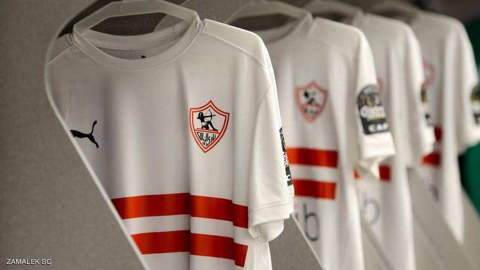

elzamalek
the greatest culb in the whole world

Abstract of Zamalek
-The club was founded on 5 January 1911 as
Qasr El Nile Club and was first headed by the Belgian lawyer George Merzbach. The name was changed two years later to Cairo International Sports
Club (C.I.S.C.),[5] which was colloquially referred to as El Qāhirah El Mokhtalat Club, or El Mokhtalat Club. The club was named in 1941 after King Farouk
of Egypt and became known as Farouk El Awal Club
(transl. Farouk I Club. After the 1952 Egyptian revolution, the club name was renamed to Zamalek
Zamalek established itself as a major force in Egyptian football during the 1920s, and became the first Egyptian
team to win a title, which was the Sultan Hussein Cup in 1921; the first team to win the Egypt Cup in 1922;[7] and the first team to
win the Cairo League in 1922–23.[8] It is one of two clubs that have played in every season of the Egyptian Premier League, and one of seven clubs that
have never been relegated to the Egyptian Second Division. On the continental side, Zamalek has won five CAF Champions League titles,
one CAF Confederation Cup title, four CAF Super Cup titles and one African Cup Winners' Cup title; making it one of the most successful clubs in Africa. It is also the first Egyptian team to ever win the CAF Super Cup when it beat archrival Al Ahly in the 1994 CAF Super Cup. At the international level, Zamalek is the first Egyptian team to win the Afro-Asian Cup in 1987 and 1997. Zamalek is also the first Egyptian team to qualify for the FIFA Club World Cup when it won
the 2000 African Cup Winners' Cup,
despite the championship being cancelled later on. Zamalek won four of the most prestigious[9]
continental competitions in Africa, the African Cup of Champions Clubs (Later known as CAF Champions League), as well as 9
continental and intercontinental
championships
(4 CAF Champions League, 2 CAF Super Cup, 1 African Cup Winners' Cup, 2 Afro-Asian Cup)
as the most successful club of the 20th century .also Zamalek is the most decorated in Afro-Asian Cup which belongs to continental trophies
Little is known about the very early years of the club. According to historians
,[11][12] the club was established by Belgian lawyer George Merzbach. On the 25 December 1910, Merzbach realized that the Cairo Tramways Company’s guest house hosting the celebration on the Nile banks was suitable as a sports club headquarters while attending the company's Christmas celebration. Merzbach decided to establish a new club for Belgians, Egyptians, and foreigners.
At the time, Gezira Sporting Club, the main sporting club in Cairo, was exclusively for the British Army and unavailable for non-British foreigners
and Egyptians. For the new club, he chose the name Qasr El Nile (transl. The Nile Palace). He did not have difficulties
in establishing the club, as he enjoyed strong ties within the Palace of Khedive Abbas II, as well as many friendships with senior officials of Egyptian society. He was also the private lawyer for both Baron Empain and the Cairo Tramways Company. On 5 January 1911 the club was established, and it was officially opened on February 6 of the same year.
The first board of directors consisted of Merzbach as president, archaeologist Howard Carter as vice
president, and Noah Amin Abdullah, Ahmed Mahmoud Azzam, Khoury Chalhoub (Lebanese, Representative of the Cairo Tramways Company),
and Paolo Esposito (Italian, Representative of the Khedivial Palace) as board members. It was the first club in Cairo to emerge from
non-English expatriate communities. They formed sports and social clubs, each with its own identity.[13] An essential aspect of the club was that it was for all people
and not for any specific social, economic, or ethnic community. It started out and continued through World War I under Merzbach's presidency.
click here
*note*
image map in logo of zamalek